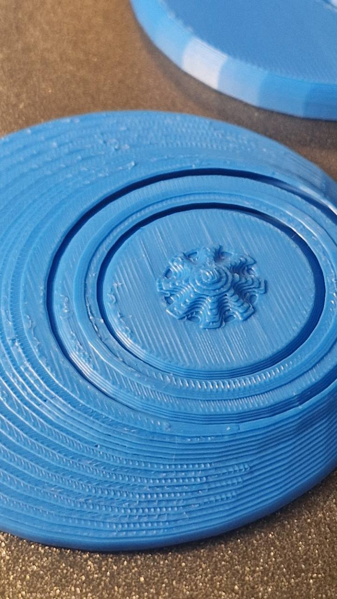
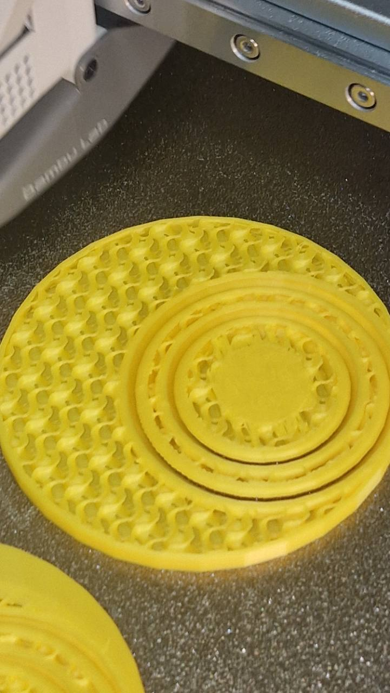
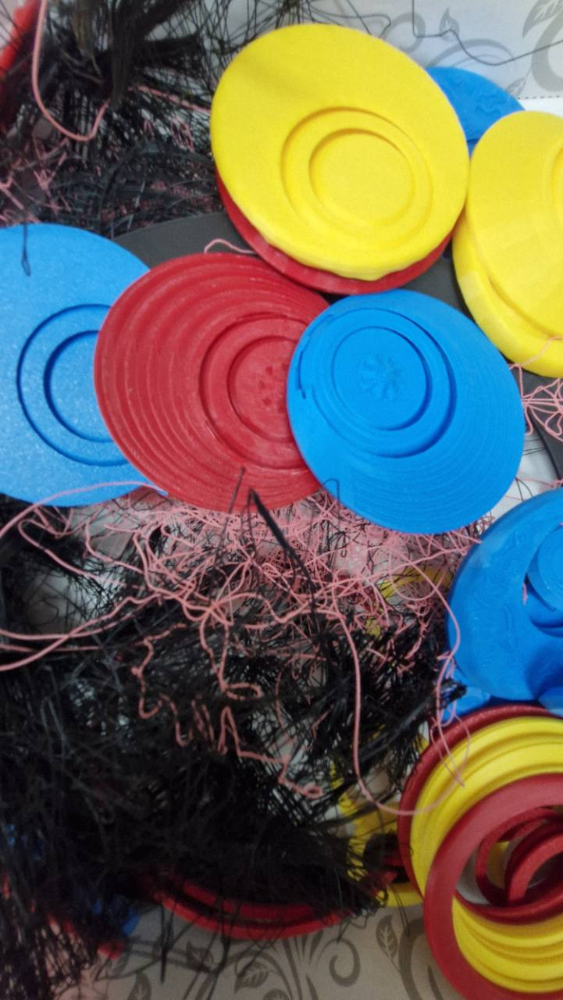

Zmijica

Prostorna žičana putanja na kartonskoj podlozi, sa zelenim elementom na žici i izdignutim osloncima.
Donet rad · izrada započeta u nedelji 1
Principi univerzalnog dizajna Univerzitet „Union — Nikola Tesla”, Beograd · Fakultet za graditeljski menadžment 2026/2027 · prvi (zimski) semestar · treća godina
Radna sveska predmeta
Pregled crteža, prototipova i nastavnih primera, njihovih autora i dostavljenih slika.
08 evidentiranih radova · pregled se dopunjuje
Prostorna žičana putanja na kartonskoj podlozi, sa zelenim elementom na žici i izdignutim osloncima.
Donet rad · izrada započeta u nedelji 1

Digitalni prototip prikazan na laptopu: scena sa cvetovima različitih boja i oblika, uz oznaku „Žuti cvet“.
Donet rad · izrada započeta u nedelji 1

Višeetažna kartonska konstrukcija sa unutrašnjim pregradama, otvorima i belom lopticom.
Donet rad · izrada započeta u nedelji 1

Kartonske ploče sa tamnim kvadratnim poljima i svetlim, izdignutim ciframa. Fotografija beleži fizički raspored elemenata.
Donet rad · izrada započeta u nedelji 1

Obojeni delovi kartonske ambalaže i podloga sa oznakama boja. Na fotografiji se delovi rukama raspoređuju uz podlogu.
Donet rad · izrada započeta u nedelji 1

Otvorena kartonska kutija sa narandžastim cilindričnim elementima i dvema crnim šipkama iznad njih. Na fotografiji se rukom pridržava žuti predmet.
Donet rad · izrada započeta u nedelji 1

Tehnički crtež dizajna: prostorni prikaz kvadratne podloge sa mrežom i kružnim i izduženim elementima, uz izdvojene delove i projekcije. Rad je dokumentovan kao crtež, a ne kao izrađen prototip.
Dokumentovan rad




Nastavnikov prototip zvečke, dizajniran u Blenderu i izrađen 3D štampom. Četiri fotografije prikazuju kružne forme u plavoj, žutoj i crvenoj boji, koncentrične elemente i različite površinske detalje.
Dokumentovan rad